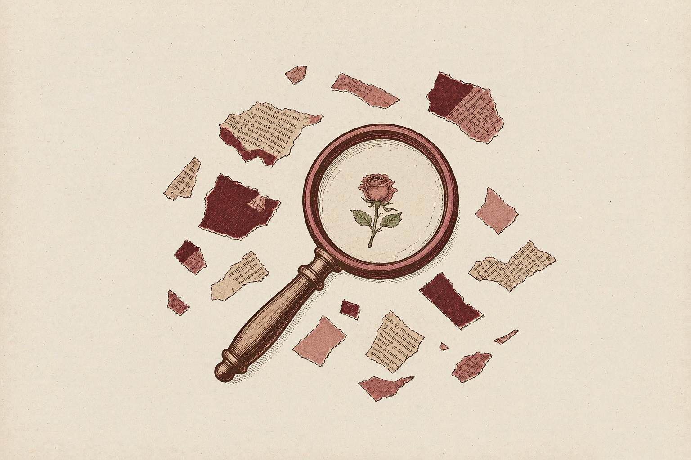

HER FILM NOTES / 01
Enola Holmes
母亲、女儿，以及成为自己的路Mothers, daughters, and the path to becoming oneself.
Enola从母亲那里继承了线索，却必须亲自决定故事的走向。从一段轻快的侦探冒险出发，重新看见母女之间的爱、分歧，以及一个女孩逐渐拥有自己的判断。Enola inherits clues from her mother, but must decide where her own story leads. Through a lively detective adventure, we look again at maternal love, disagreement, and a young woman learning to trust her own judgement.
阅读第一期专题Read Issue 01 WOMEN · CINEMA · SELFHOOD
WOMEN · CINEMA · SELFHOOD
不是替女性写出标准答案，
而是认真看见她们如何生活。We do not write standard answers for women.
We pay attention to how they actually live.
我想记录的主题Themes I Return To
 已上线Now reading
已上线Now reading影视与她Her Film Notes
从女性角色与女性创作者出发，细读人物的欲望、选择、矛盾与成长。Read films through women characters and filmmakers, attending to desire, choices, contradictions, and change.
进入第一期Explore Issue 01 已上线Now reading
已上线Now reading书与她Her Bookshelf
阅读女性作家、女性主义经典与书写性别经验的作品，从文学人物的处境出发，重新思考身份、野心与自我选择。Read women writers, feminist classics, and books about gendered experience. Through literary lives, reconsider identity, ambition, and the freedom to choose.
阅读《钟形罩》专题Read The Bell Jar feature
女性成长与主体性Women’s Growth & Agency
关注女性如何认识自己、面对社会期待、作出选择，以及电影如何呈现女性的自主与局限。Explore self-knowledge, social expectations, personal choices, and how cinema portrays women’s agency and constraints.
从现有专题开始阅读Start with the current feature你不必活成某个标准答案。了解我们的编辑理念Our editorial note
你可以自己决定故事接下来怎么写。You do not have to fit a prescribed answer.
You can decide how your story continues.